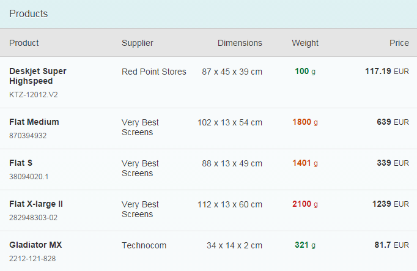
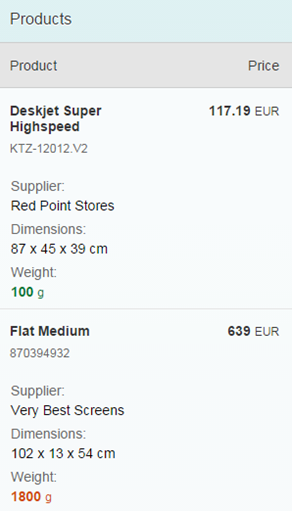

One of the biggest challenges in responsive web design (RWD) is presenting tabular data. Large tables containing lots of columns simply don't fit on smaller screens, and there is no easy way to reformat the table content with CSS and media queries for an acceptable visual display. To address this, our framework offers a column-based solution (column hiding) and row-based solution (pop-in behavior) for displaying tables responsively and both options are applicable at the same time. This may sound rather complicated, so let's look at an example.
Say we want to build this nice table to display on a desktop:

On mobile devices, we know that we won't have enough space to show all these columns, so we need to ask ourselves which columns are most important. Let's say:
If we apply these decisions we just made, our mobile devices should now look like this:

You can control the responsive table design using the API of sap.m.Column.
This control provides two properties to handle column hiding and the pop-in
behavior.
minScreenWidth: This value defines the break point for the column
visibility. For instance: An Apple iPhone 5 device has 568px x 320px resolution
(dip/device-width), so if we assign 400px (or 25em based on 16px), then this
column will not be visible for portrait mode (width 320px) but will be visible
for landscape mode (width 568px). Instead of specifying in px or em, you can
also assign one of the predefined sap.m.ScreenSize types like
Tablet (for 600px) or Desktop (for 1024px). The default value
for this property is an empty string, meaning this column will
always be visible.demandPopin: Depending on your minScreenWidth, the column
can be hidden in different screen sizes. Setting this property to
true shows this column in the pop-in area instead of hiding
it. The default value is false.And that's it! All you need to know are these two variables for responsive tables. So if we go back to our original example for a minute:
minScreenWidth:"" and
demandPopin:false) do their job.minScreenWidth:"Small" and
demandPopin:false (default value).minScreenWidth:"Small" but now with
demandPopin:true to show the column in a pop-in area.minScreenWidth:"Tablet" and
demandPopin:true.
To achieve a valid table design, at least one column should always be visible and should not go into the pop-in area.
There is an alternative configuration for simpler cases: Let
sap.m.Table itself take control of the responsive behavior.
The responsive table provides a feature where the table automatically moves the columns to the
pop-in area based on their importance. To enable this, simply set
autoPopinMode:true in the responsive table.
The default value of the importance property for a column is
"None". If there is no column importance defined, the
responsive table treats the first column as the most important column. The following
columns are treated as less important and are moved to the pop-in area
as
the browser window size is reduced.
You can change the default automatic pop-in behavior by defining the
importance property for the columns.
The columns are moved to the pop-in area in the following order based on their importance:
Columns with Low importance
Columns with Medium and None importance
These are treated as equal and moved to the pop-in area when there are no
columns with Low importance.
Columns with High importance
Let's take the same example as before with the Product and
Price columns as the most important columns. They must
move to the pop-in area last. To achieve this, importance:"High"
must be set for the two columns. As you reduce the size of the browser window, the
columns with lower importance move to the pop-in area before the two columns
configured with High importance.
You can also hide columns with a specific importance in the pop-in area. To achieve
this, hiddenInPopin must be configured. For example, if you want to
hide all columns with "Low" and "Medium"
importance, you can define hiddenInPopin="Low,Medium".
Additionally, you can also listen to the popinChanged event of the
responsive table that is fired for every change of the pop-in area (columns moved in
or out of the pop-in
area).
For more information, see the Sample.
The automatic pop-in feature ensures that not all columns move to the pop-in area and there is always at least one visible column in the table.
The demandPopin and minScreenWidth
properties of a column are configured by the responsive table.
minScreenWidth is determined based on the
width or autoPopinWidth properties
of the column if this feature is enabled. If there are any custom
settings for the demandPopin and
minScreenWidth properties, they will be overwritten
by this feature.